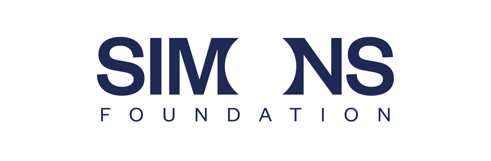

<div class="row flex-column-reverse flex-md-row py-2">
    
    <div class="col-md-8" id="bio">
        <h1>Raunak Dey</h1>
        <section class="intro-section">
          <p class="text-justify">
            I am a fourth-year Physics Ph.D. candidate at the
            <a href="https://umdphysics.umd.edu" target="_blank">Department of Physics at the University of Maryland</a>, College Park.
            I am advised by <a href="https://biology.umd.edu/people/dr-joshua-weitz" target="_blank">Prof. Joshua Weitz</a> and mentored by
            <a href="https://sjbeckett.github.io" target="_blank">Dr. Stephen Beckett</a>. My Ph.D. thesis is on, "Bayesian learning of 
              phage-microbe interaction traits from population dynamics across scales".
          </p>
  
        
          <p class="text-justify mission-statement">
            My research focuses on solving <strong>inverse problems</strong> and <strong>optimization problems</strong> using
            <strong>time series data</strong>. I develop <strong>interpretable models</strong> to uncover parameters and dynamics of complex systems; and <strong>optimal methods</strong> for downstream decision-making under realistic constraints.
            My mission is <em>building quantitative models for the human good</em>. So far, my models have:
          </p>
          
          <ul class="custom-list">
            <li>🎯 Helped clinicians make informed treatment decisions for infectious diseases</li>
            <li>🔍 Enabled scientists to gain deeper insights from experimental data</li>
            <li>🛠️ Supported engineers in making optimal design choices</li>
          </ul>
        </section>


        <!-- Bootstrap & Bootstrap Icons (in your <head>) 
<link href="https://cdn.jsdelivr.net/npm/bootstrap@5.3.3/dist/css/bootstrap.min.css" rel="stylesheet">
<link href="https://cdn.jsdelivr.net/npm/bootstrap-icons@1.10.5/font/bootstrap-icons.css" rel="stylesheet">
        -->

<!-- Research Highlights Section -->
<div class="container my-5">
  <div class="row text-center">

    <!-- Tools -->
    <div class="col-md-4 mb-4">
      <div class="cool-card h-100">
        <div class="icon-circle bg-primary text-white mx-auto mb-3">
          <i class="bi bi-gear-fill fs-3"></i>
        </div>
        <h5 class="mb-3 fw-semibold">Mathematical Tools</h5>
        <ul class="styled-list">
          <li><i class="bi bi-check-circle-fill me-2 text-primary"></i>Bayesian Inference</li>
          <li><i class="bi bi-check-circle-fill me-2 text-primary"></i>Control Theory</li>
          <li><i class="bi bi-check-circle-fill me-2 text-primary"></i>Constrained Optimization</li>
          <li><i class="bi bi-check-circle-fill me-2 text-primary"></i>Deep Learning and GenAI</li>
          <li><i class="bi bi-check-circle-fill me-2 text-primary"></i>Mechanistic ODE models</li>
        </ul>
      </div>
    </div>

    <!-- Domains -->
    <div class="col-md-4 mb-4">
      <div class="cool-card h-100">
        <div class="icon-circle bg-success text-white mx-auto mb-3">
          <i class="bi bi-globe2 fs-3"></i>
        </div>
        <h5 class="mb-3 fw-semibold">Application Domains</h5>
        <ul class="styled-list">
          <li><i class="bi bi-check-circle-fill me-2 text-success"></i>Viral Infection Modeling</li>
          <li><i class="bi bi-check-circle-fill me-2 text-success"></i>Robotics & Rheology</li>
          <li><i class="bi bi-check-circle-fill me-2 text-success"></i>Nonequilibrium statistical mechanics</li>
          <li><i class="bi bi-check-circle-fill me-2 text-success"></i>Optics & Instrumentation</li>
          <li><i class="bi bi-check-circle-fill me-2 text-success"></i>Radio Astronomy</li>

        </ul>
      </div>
    </div>

    <!-- Impact -->
    <div class="col-md-4 mb-4">
      <div class="cool-card h-100">
        <div class="icon-circle bg-warning text-white mx-auto mb-3">
          <i class="bi bi-briefcase-fill fs-3"></i>
        </div>
        <h5 class="mb-3 fw-semibold">Impact Created</h5>
        <ul class="styled-list">

          <li><i class="bi bi-file-earmark-text-fill me-2 text-warning"></i>8 Journal & Conference Papers</li>
          <li><i class="bi bi-lightbulb-fill me-2 text-warning"></i>1 Patent</li>
          <li><i class="bi bi-award-fill me-2 text-warning"></i>2 Preprints</li>
          <li><i class="bi bi-star-fill me-2 text-warning"></i>8 Awards</li>
          <li><i class="bi bi-people-fill me-2 text-warning"></i>2 Grad Students Mentored</li>
          <li><i class="bi bi-person-workspace me-2 text-warning"></i>7 Employees Managed</li>

        </ul>
      </div>
    </div>

  </div>
</div>

<!-- Social Links Section -->
<div class="container my-4">
  <div class="text-center">
    <ul class="social-links list-inline">
      <li class="list-inline-item">
        <a href="https://mailhide.io/e/uNztNKai" target="_blank" class="social-link">
          <i class="bi bi-envelope-fill"></i> <span>rdey [at] umd.edu</span>
        </a>
      </li>
      <li class="list-inline-item">
        <a href="https://github.com/RaunakDey" target="_blank" class="social-link">
          <i class="bi bi-github"></i> <span>GitHub</span>
        </a>
      </li>
      
      <li class="list-inline-item">
        <a href="https://scholar.google.com/citations?user=2mI3Lx4AAAAJ&hl=en&authuser=1" target="_blank" class="social-link">
          <i class="bi bi-mortarboard-fill"></i> <span>Google Scholar</span>
        </a>
      </li>

      <li class="list-inline-item">
        <a href="https://www.linkedin.com/in/raunak-d-50991214a/" target="_blank" class="social-link">
          <i class="bi bi-linkedin"></i> <span>LinkedIn</span>
        </a>
      </li>

      <li class="list-inline-item">
        <a href="https://twitter.com/raunak_dey_" target="_blank" class="social-link">
          <i class="bi bi-twitter"></i> <span>X</span>
        </a>
      </li>

    </ul>
  </div>
</div>
        

<div class="institution-logos mt-3">
  <p>I am fortunate to have worked alongside excellent scientists and engineers at
  <ul class="list-inline">
    <li class="list-inline-item mx-2">
      
      University of Maryland
    </li>
    <li class="list-inline-item mx-2">
      
      Georgia Tech
    </li>
    <li class="list-inline-item mx-2">
      
      Simons Foundation
    </li>
    <li class="list-inline-item mx-2">
      
      University of British Columbia
    </li>
    <li class="list-inline-item mx-2">
      
      IISER Kolkata
    </li>
  </ul>
  </p>
</div>    

    </div>

  

<div class="col-md-4" style="z-index:4;">
    
    <p id="description"> Mission: Building quantitative models for the human good </p>
</div>


                
                    
               
</div>

{% include research.html %}
{% include publications.html %}
{% include experience.html %}
{% include awards.html %}
{% include talks.html %}
{% include teaching.html %}         
{% include media.html %} 
